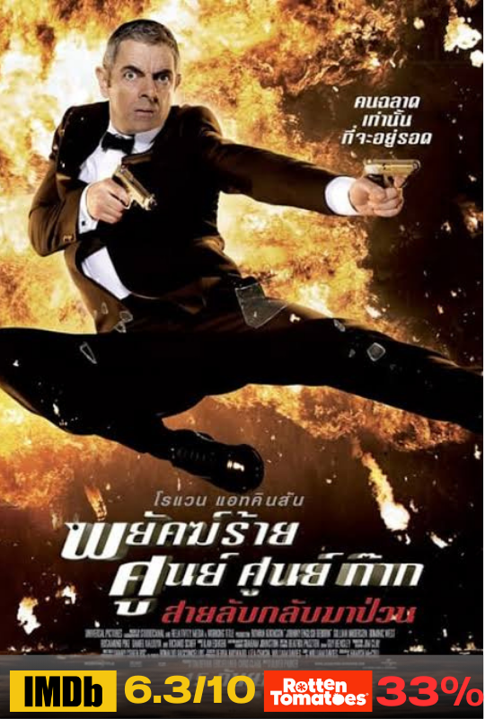
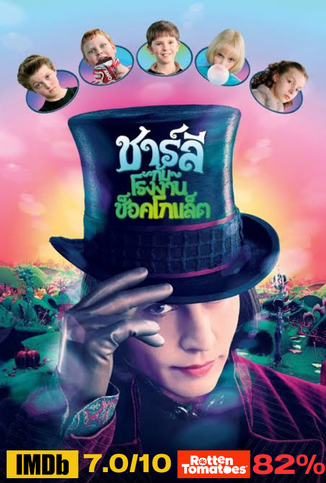

คะแนนรีวิวจากเว็บไซต์ IMDB 8.2/10
คะแนนรีวิวจากเว็บไซต์ Rotten Tomatoes 77%
เรื่องย่อ เล่าถึงเรื่องราวของ สองคู่หูต่างขั้วที่จับผลัดจับผลูตระเวนเดินทางไปทั่วตอนใต้ของอเมริกาด้วยกัน "โทนี่ ลิป" (วิกโก มอร์เทนเซน)
นอดีตขาใหญ่การ์ดเฝ้าผับ เชื้อสายอิตาเลียน-อเมริกันจากย่านบรองซ์ในนิวยอร์ก ต้องมาเป็นคนขับรถให้ "ดอน เชอร์ลีย์" (มาเฮอร์ชาลา อาลี)
นักเปียโนคลาสสิกผิวสีระดับโลก ระหว่างที่เขาออกเดินสายขึ้นแสดงในยุค 60 สิ่งเดียวที่นำทางทั้งคู่คือ "สมุดปกเขียว" ที่บอกสถานที่ที่เป็นมิตรกับคนผิวสี
พวกเขาต้องฝ่าทั้งกำแพงแห่งสีผิว ภัยอันตรายต่าง ๆ เช่นเดียวกับน้ำใจจากเพื่อนมนุษย์ในการเดินทางครั้งสำคัญนี้
เรื่องย่อ กลางทุ่งนาที่ร้อนเดือดพล่านของหมู่บ้านแห่งหนึ่งในจังหวัดยโสธร “ทอง” (ชัยพันธ์ นินกง) และ “สร้อย” (เยาวลักษณ์ ตุ้มบุญ)
กำลังจีบกันอย่างชนิดที่ว่าหวานจนน้ำตาลท่วมทุ่ง ในขณะที่ “แหยม” (หม่ำ จ๊กม๊ก) น้าชายสไตล์จิ้มลิ้มคนเดียวของทองถูก “เจ้ย” (เจเน็ต เขียว)
สาวหน้าคมคล้ำ…คมขำทั้งตามตื๊อตามจีบหลงรักสุดหล่ออย่างแหยมชนิดหัวปักหัวปำ ทำให้แหยมรำคาญเป็นที่ซู้ด…ดดด ทั้งสี่เป็นอันรู้กันว่าเจ้ยหลงรักแหยมอย่างลงรากฝังลึก
และพยายามทุกทางให้แหยมตอบรับน้ำใจอันนี้ แม้ว่าทองกับสร้อยจะช่วยลุ้นให้ทั้งคู่ลงเอยกันเสียที แต่แหยมก็ไม่เคยหันมาสนใจ
3.ไทบ้านเดอะซีรีส์ 2.1 (2018)
เรื่องย่อ เซียงเสือ ผู้หญิงที่อกหักเพราะคนที่รักที่สุดกำลังจะแต่งงาน เขาทำทุกอย่างเพื่อที่จะขัดขวาง แต่ไม่สำเร็จเลยคิดจะฆ่าตัวตายเพื่อลืมใบข้าวแต่ทำไม่ได้
ในขณะที่ป่องทะเลาะกับพ่อเรื่องเซเว่นหลังจากทำนาสำเร็จ จาลอดกับแก้วที่กำลังใช้ชีวิตคู่รักอย่างมีความสุข ในส่วนของเฮิร์บพยายามดูแลเจ๊สวยที่กำลังท้อง
ด้วยการทำงานบ้านทุกอย่างไม่เว้นแม้แต่การซักกางเกงในให้เมียในเวลาเดียวกันกีโนกลับมาบ้านโดยมีแฟนมาส่งทำให้เจ๊สวยไม่พอใจ เมื่อเวลาผ่านมาไม่นานเซียงขาดที่พึ่งทางออกที่ดีที่สุดของเขา ณ
ตอนนั้นคือการบวช เพราะคิดว่าชายผ้าเหลืองจะทำให้เขาลืมใบข้าวได้แต่ยังมีสิ่งหนึ่งที่เขาลืมคิดคือ เขามีกิเลส ความใคร่ ผู้หญิงในตัวสูงมากและป่องหลังจากที่ทะเลาะกันกับพ่อบ่อยครั้ง
ป่องได้ยื่นคำขาดว่าอยากสร้างแบรนด์เป็นของตัวเอง นั่นก็คือสโตร์ผัก
4.Hotel Transylvania 2 (2024)

เรื่องย่อ หลังจากท่านเคราท์แดร็กคูล่าได้สร้างปราสาทขึ้นมาเพื่อปกป้อง เมวิส ลูกสาวสุดที่รักจากเหล่ามนุษย์ผู้โหดร้าย แล้วได้ดัดแปลงเป็นโรงแรมสุดหรูสำหรับวันหยุดพักผ่อนของเหล่าภูตผีทั่วโลกแล้ว
จนเมื่อเวลาผ่านไป ในวันเกิดอายุครบ 118 ปี ของเมวิส ท่านเคราท์กลับว่า โจนาธาน มนุษย์คนแรกได้มาปรากฏตัวขึ้นภายในงานเลี้ยงของลูกสาวโดยบังเอิญ
เรื่องราวอลหม่านสุดเฮฮาจึงเกิดขึ้นภายในงานเลี้ยงผีๆ และทำให้ท่านเคราท์ผู้หวงลูกสาวสุดใจและไม่เคยเปิดใจให้กับเหล่ามนุษย์ที่เป็นผู้พรากหญิงอันเป็นที่รักของเขาตลอดกาล
ได้กลับมามองมนุษย์มุมใหม่อีกครั้งโดยในส่วนของภาคที่ 2 ที่เรากำลังจะได้พบกันนี้ โรงแรมผีของเราก็กำลังเตรียมพร้อมต้อนรับการเติบโตของสมาชิกใหม่ ซึ่งก็คือ
หลานของท่านเคราท์ ซึ่งเป็นลูกครึ่งมนุษย์แวมไพร์ ระหว่างเมวิสและโจนาธาน เรื่องราวอลวนภายในครอบครัวแดร็กคูร่าและเหล่าเพื่อนผีๆ สุดเกรียน ไม่ว่าจะเป็น
แฟรงเกนสไตน์, มัมมี่, มนุษย์หมาป่า, หมนุษย์ล่องหน พร้อมด้วยตัวละครตัวใหม่ที่เพิ่มมาสร้างสีสันให้กับภาคใหม่ นอกเหนือจากเจ้าหนูน้อยผมแดงหลานชายสุดที่รักท่านเคราท์
ก็ยังมี แวลด ท่านเคราท์แดร็กคูร่าหงำเหงือกผู้มาเยือนโรงแรมทรานซิวาเนียคนใหม่ ที่จะมาเพิ่มเติมความสนุกให้กับภาคนี้ยิ่งขึ้น
คะแนนรีวิวจากเว็บไซต์ IMDB 8.2/10
คะแนนรีวิวจากเว็บไซต์ Rotten Tomatoes 77%
เรื่องย่อ ครอบครัวตัวสลับ เป็นเรื่องราวของพ่อแม่ลูกตระกูลวอล์กเกอร์ส ที่พวกเขาต้องเผชิญหน้ากับเหตุการณ์สุดประหลาดระหว่างไปชมปรากฏการณ์ดาวเคราะห์เรียงตัวกัน 3 ดวง
เพราะเมื่อตื่นเช้าขึ้นมาทุกคนต้องสลับร่างของกันและกัน เมื่อพ่อแม่ต้องกลายมาอยู่ในร่างของลูก และลูก ๆ อยู่ในปีของพ่อแม่ ได้เวลาที่พวกเขาจะต้องรวมใจเป็นหนึ่งเดียวกัน
เพื่อหาวิธีกลับเข้าสู่ร่างเดิมของตัวเอง และนั่นเป็นหนทางที่พวกเขาจะได้เรียนรู้และรู้จักตัวตนของกันมากยิ่งขึ้น
คะแนนรีวิวจากเว็บไซต์ IMDB 6.1/10
คะแนนรีวิวจากเว็บไซต์ Rotten Tomatoes 43%
เรื่องย่อคังมู เคยเป็นอดีตสายลับยอดฝีมือ แต่ตอนนี้เขาหยุดปฏิบัติการและมาเป็นพ่อบ้านที่ใช้ชีวิตสมรสกับ มีซน ตำรวจหญิงที่ประจำอยู่ทีมอาชญากรรม
โดยเขาเลือกที่จะแอบซ่อนอดีตหน้าที่การงานของเขาเอาไว้เบื้องหลัง กระทั่งวันหนึ่ง ฮีจู อดีตเพื่อนร่วมงานของเขาได้มาปรากฏตัวอีกครั้ง ก็ทำให้วันแสนสุขของเขาสั่นคลอน
เขาจึงยื่นมือช่วยเหลือเพื่อนเก่าโดยที่ไม่ให้เมียรู้ แต่มีซนกลับสงสัยในพฤติกรรมของสามี จึงได้แอบตามเขาไปเงียบ ๆ จนนำพวกเขาไปสู่สถานการณ์ที่คาดไม่ถึง
คะแนนรีวิวจากเว็บไซต์ IMDB 8.0/10
คะแนนรีวิวจากเว็บไซต์ Rotten Tomatoes 75%
เรื่องย่อ หนุ่มชนชั้นสูงที่ทิ้งชีวิตอันสุขสบายไปเป็นทหาร จนกระทั่งวันหนึ่งพ่อเขาป่วยหนักเขาจึงถูกตามตัวให้กลับบ้าน
และเมื่อพ่อเสียชีวิตลงเขาก็ได้พบว่าพ่อได้ตัดสินใจยกมรดกทั้งหมดรวมไปถึงยศดยุกให้กับเขา
หลังจากนั้นเขาก็ได้รู้ว่าแท้จริงแล้วพ่อเขาได้ปล่อยพื้นที่ใต้ดินของคฤหาสน์ให้พ่อค้ากัญชาเช่ามาทำฟาร์มกัญชาขนาดใหญ่ ซึ่งเป็นจุดเริ่มต้นที่ทำให้ Eddie
ต้องเผชิญกับปัญหามากมายที่แสนวายป่วงไม่รู้จบ ท้ายที่สุดแล้วเรื่องราวทั้งหมดจะลงเอยอย่างไร ทุกคนคงต้องไปรับชมด้วยตาตัวเอง

คะแนนรีวิวจากเว็บไซต์ IMDB 6.3/10
คะแนนรีวิวจากเว็บไซต์ Rotten Tomatoes 33%
เรื่องย่อ หลังแอคชั่นที่ผสมกับตลกที่อยู่มากมาย แต่สำหรับวันนี้ผมเอาเรื่องนึงมาแนะนำนั้นคือ Johnny English Reborn เป็นภาพยนตร์สายลับ
แอคชั่นสุดมนส์(ไม่แน่ใจจะเรียกว่ามันส์ได้ไหม) และยังตลกอีก เพราะตัวเองของเรื่องไม่ใช่ใครที่ไหน เขาคือ จอห์นนี่ อิงลิช (ที่รับบทแสดงโดย โรวัน แอตคินสัน)
หรือที่หลาย ๆ คนคุ้นตาคุ้นชื่อกันในนาม มิสเตอร์บีน นักแสดงตลกที่ผมเชื่อว่าใคร ๆ ก็ต้องรู้จักเขาคนนี้ ส่วนตัวผมเวลาดูอาจจะไม่คุ้นตาเท่าไหร่เพราะผมเคยดูแต่ที่ โรวัน แอตคินสัน
เขาแสดงเป็น มิสเตอร์บีน มากกว่า

คะแนนรีวิวจากเว็บไซต์ IMDB 7.0/10
คะแนนรีวิวจากเว็บไซต์ Rotten Tomatoes 82%
เรื่องย่อ Mr. Willy Wonka เจ้าของโรงงานช็อกโกแลตที่ใหญ่ที่สุดในโลก จะเปิดโรงงานให้กับเด็กที่โชคดีห้าคนและพ่อแม่ของพวกเขา เข้าชมโรงงาน
คุณ วอนก้า วางแผนซ่อนตั๋วทองคําห้าใบไว้ในห่อช็อกโกแลต
Augustus Gloop เด็กอ้วนที่มีงานอดิเรกเพียงอย่างเดียวคือการกิน ได้ตั๋วใบแรก
Veruca Salt ได้รับตั๋วใบที่สองจากพ่อของเธอ ซึ่งจ้างคนงานทุกคนของเขาแกะช็อกโกแลตจนกว่าจะพบตั๋ว
Violet Beauregarde ได้ตั๋วใบที่สามในขณะที่หยุดพักจากการสร้างสถิติโลกในการเคี้ยวหมากฝรั่ง
ตั๋วใบที่สี่เป็นของ Mike Teavee ผู้ซึ่งสนใจเฉพาะโทรทัศน์เท่านั้น
Charlie Bucket ได้ตั๋วใบที่ห้าและเขาเป็นเด็กยากจนแต่มีคุณธรรม อาศัยอยู่ในบ้านหลังเล็ก ๆ กับพ่อแม่และปู่ย่าตายายทั้งสี่ของเขา
ปู่ย่าตายายใช้เตียงเดียวในบ้านร่วมกัน ซึ่งตั้งอยู่ในห้องนอนเดียว และชาร์ลีกับพ่อแม่นอนบนพื้น
ชาร์ลีได้รับอาหารเล็กน้อยสามมื้อต่อวัน ซึ่งแทบจะไม่เพียงพอต่อการเติบโต
ปีละครั้ง ในวันเกิดของเขาจะได้รับช็อกโกแลต วอนก้า หนึ่งแท่ง
สถานการณ์ของครอบครัวแย่ลงเมื่อพ่อตกงาน
แต่โชคมหาศาลเกิดขึ้นเมื่อเขาเจอธนบัตรดอลลาร์ที่ขาดรุ่งริ่งถูกหิมะฝังอยู่ เขาใช้เงินซื้อช็อกโกแลตให้ตัวเอง และมอบส่วนที่เหลือให้แม่
และภายในห่อก็พบตั๋วทองคําใบที่ห้า ซึ่งวันรุ่งขึ้นเป็นวันที่ กําหนดให้เข้าชมโรงงาน
ทั้งพ่อและแม่ไม่สามารถพาชาร์ลีไปที่โรงงานได้ พ่อต้องหางานและแม่ต้องดูแลปู่ย่าตายายที่ต้องนอนบนเตียง
คุณปู่โจ ได้ลุกจากเตียงเป็นครั้งแรกในรอบหลายทศวรรษ ความโชคดีของชาร์ลีได้เปลี่ยนเขามีพลังขึ้นมา
คุณปู่โจและชาร์ลีออกเดินทาง
ในโรงงาน ชาร์ลีและคุณปู่โจประหลาดใจทุอย่างที่ไม่น่าเชื่อของโรงงาน พวกเขารู้สึกขอบคุณวอนก้า และโรงงานของเขา
เด็กอีกสี่คนต่างมีข้อเสียของตนเอง สร้างความวุ่นวาย พวกเขาจึงถูกพาออกไปจากโรงงานอย่างลึกลับ
10.Minions The Rise of Gru (2022)
คะแนนรีวิวจากเว็บไซต์ IMDB 6.5/10
คะแนนรีวิวจากเว็บไซต์ Rotten Tomatoes 70%
เรื่องย่อ จับมือผี talk to me เมื่อกลุ่มวัยรุ่นที่เป็นเพื่อนกันได้ค้นพบวิธีปลุกเสกดวงวิญญาณด้วยความเชื่อบางอย่าง
กลายเป็นว่าพวกเขาตื่นตาตื่นใจกับผลลัพธ์และปรากฏการณ์เหนือธรรมชาติที่ได้เรียนรู้ใหม่ กระทั่งมันล่วงเกินไปไกลกว่าที่พวกเขา
นำไปสู่การเปิดประตูสู่โลกแห่งวิญญาณอันน่าสยดสยอง ที่ทำให้พวกเขาต้องถูกบีบบังคับให้ตัดสินใจเลือกว่าจะไว้วางใจใคร
ระหว่างคนเป็นหรือคนตายในการจะมีชีวิตให้ดำรงรอดต่อไปครั้งนี้...

![ลัดดาแลนด์]](https://th.bing.com/th/id/R.c7cbb45f93af34ce1adc7b6230a139ec?rik=56OZ5G5P%2fJ2WUQ&riu=http%3a%2f%2fsiamzone.com%2fmovie%2fpic%2f2005%2fhelloyasothorn%2fposter1.jpg&ehk=j3yOuTc4DCAJRuy3um7lOCNiKLKRWVflvYKidUVf4oM%3d&risl=&pid=ImgRaw&r=0)